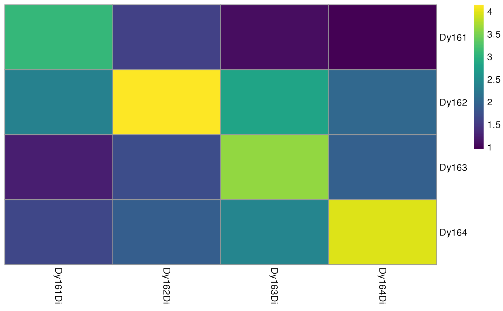
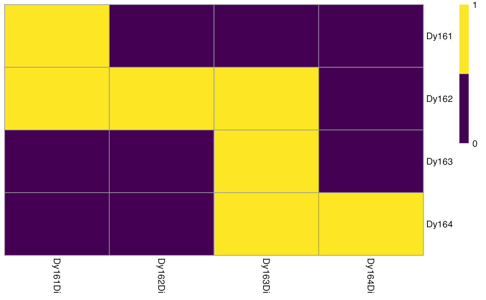

R/plotSpotHeatmap.R
plotSpotHeatmap.RdHelper function for estimating the spillover matrix. This function visualizes the median pixel intensities per spot (rows) and per channel (columns) in form of a heatmap.
plotSpotHeatmap(
object,
spot_id = "sample_id",
channel_id = "channel_name",
assay_type = "counts",
statistic = "median",
log = TRUE,
threshold = NULL,
order_metals = TRUE,
color = viridis(100),
breaks = NA,
legend_breaks = NA,
cluster_cols = FALSE,
cluster_rows = FALSE,
...
)a SingleCellExperiment object containing pixel
intensities per channel. Individual pixels are stored as columns and
channels are stored as rows.
character string indicating which colData(object) entry
stores the isotope names of the spotted metal. Entries should be of the
form (mt)(mass) (e.g. Sm152 for Samarium isotope with the atomic mass 152).
character string indicating which rowData(object)
entry contains the isotope names of the acquired channels.
character string indicating which assay to use (default
counts).
the statistic to use when aggregating channels per spot
(default median)
should the aggregated pixel intensities be log10(x + 1)
transformed?
single numeric indicating a threshold after pixel
aggregation. All aggregated values larger than threshold will be
labeled as 1.
should the metals be ordered based on spotted mass?
see parameter in pheatmap
see parameter in pheatmap
see parameter in pheatmap
see parameter in pheatmap
see parameter in pheatmap
other arguments passed to pheatmap.
a pheatmap object
Visualizing the aggregated pixel intensities serves two purposes:
Small median pixel intensities (< 200 counts) might hinder the robust
estimation of the channel spillover. In that case, consecutive pixels can be
summed (see binAcrossPixels).
Each spotted metal (row) should show the highest median pixel intensity in its corresponding channel (column). If this is not the case, either the naming of the .txt files was incorrect or the incorrect metal was spotted.
By setting the threshold parameter, the user can easily identify spots
where pixel intensities are too low for robust spillover estimation.
pheatmap for visual modifications
aggregateAcrossCells for the aggregation
function
path <- system.file("extdata/spillover", package = "imcRtools")
# Read in .txt files
sce <- readSCEfromTXT(path)
#> Spotted channels: Dy161, Dy162, Dy163, Dy164
#> Acquired channels: Dy161, Dy162, Dy163, Dy164
#> Channels spotted but not acquired:
#> Channels acquired but not spotted:
# Visualizes heatmap
plotSpotHeatmap(sce)

# Visualizes thresholding results
plotSpotHeatmap(sce, log = FALSE, threshold = 200)
